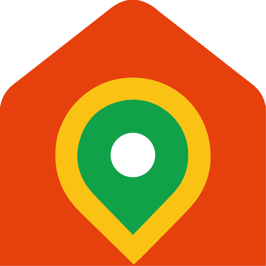

Ruta Padrón Xacobeo
Mapa creado usando GPS Visualizer Programa de emprego Xuventude Terras de Iria 2023
Por favor, espera mentras se carga o mapa...

Datos da Ruta Padrón Xacobeo
- Dificultade técnica: Fácil
- Distancia: 4,13 km
- Desnivel positivo: 66 m
- Altitude máxima: 67 m
- Altitude mínima: 4 m
- Tipo de roteiro: Circular
Símbolos no mapa
-
 Inicio da ruta
Inicio da ruta
-  Fin da ruta
-
 Puntos de interese
Puntos de interese
Meteoroloxía na Ruta

Fonte de textos e imaxes: Terras de Iria 2020 | Concello de Padrón | Concello de Rois | Concello de Dodro | Obaixoulla.gal | Google Earth | OpenStreetMap